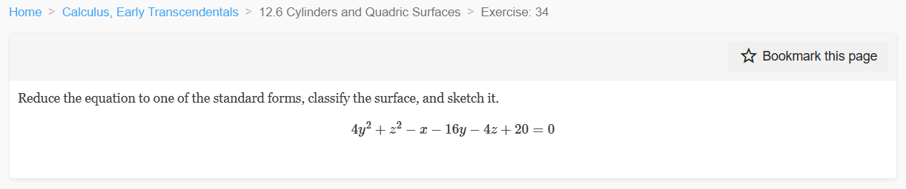
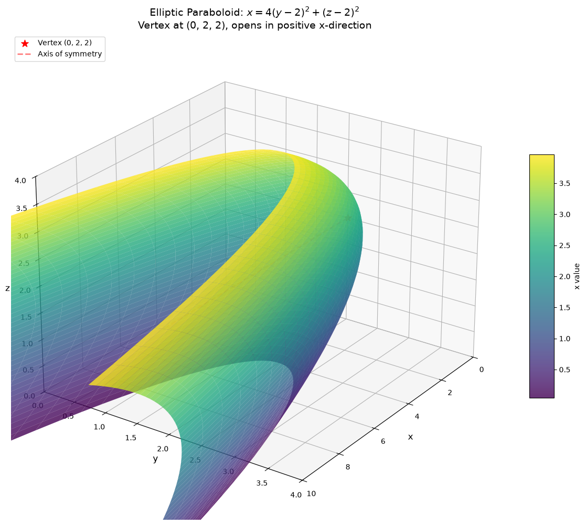
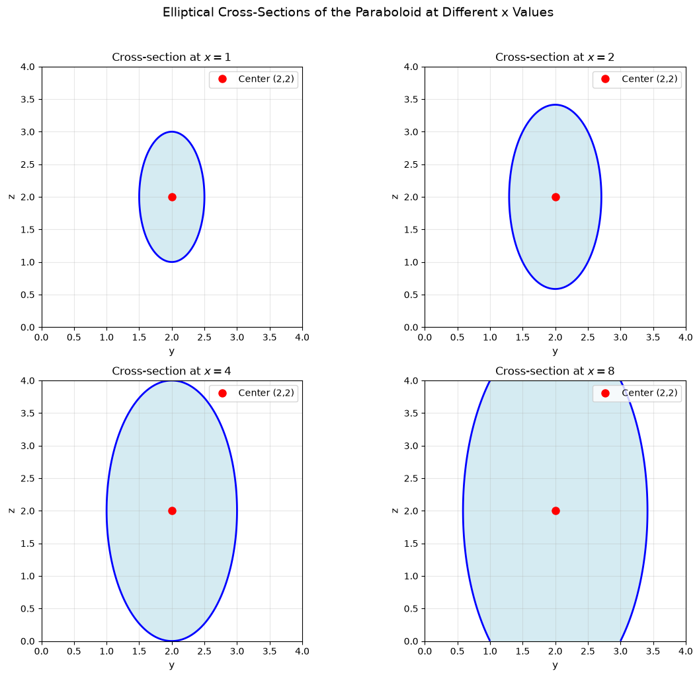
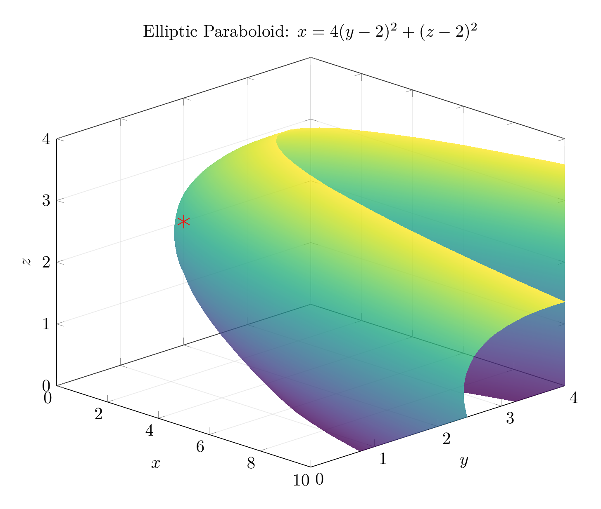
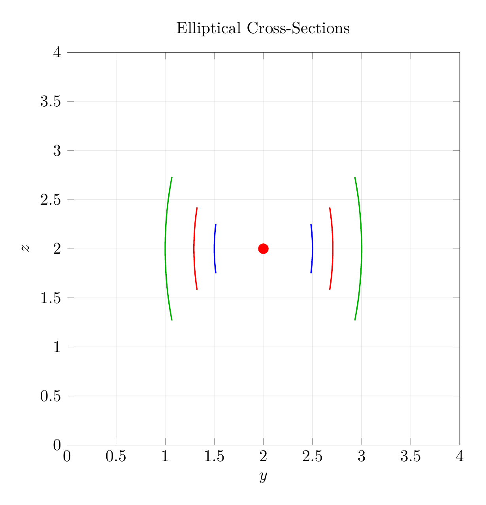

Path: mcma-Qwen3.5-397B-A17B/calculus-12.6.34/chat_20260823_213410_696068_utc_0800
Problem
Please solve the math problem in the image.

End of problem
Answer
# Solution: Reducing and Classifying the Quadric Surface
## Problem
Reduce the equation to one of the standard forms, classify the surface, and sketch it:
$$4y^2 + z^2 - x - 16y - 4z + 20 = 0$$
## Step 1: Complete the Square
We need to complete the square for the $y$ and $z$ terms.
### For the $y$ terms:
$$4y^2 - 16y = 4(y^2 - 4y) = 4(y^2 - 4y + 4 - 4) = 4((y-2)^2 - 4) = 4(y-2)^2 - 16$$
### For the $z$ terms:
$$z^2 - 4z = z^2 - 4z + 4 - 4 = (z-2)^2 - 4$$
## Step 2: Substitute Back into the Original Equation
Substituting these completed squares back:
$$4(y-2)^2 - 16 + (z-2)^2 - 4 - x + 20 = 0$$
Simplifying:
$$4(y-2)^2 + (z-2)^2 - x - 20 + 20 = 0$$
$$4(y-2)^2 + (z-2)^2 - x = 0$$
## Step 3: Solve for $x$ (Standard Form)
$$\boxed{x = 4(y-2)^2 + (z-2)^2}$$
This is the **standard form** of the equation.
## Step 4: Classify the Surface
The equation $x = 4(y-2)^2 + (z-2)^2$ is in the form of an **elliptic paraboloid**.
### Key Characteristics:
- **Type**: Elliptic Paraboloid
- **Vertex**: $(0, 2, 2)$ (when $y=2$ and $z=2$, we get $x=0$)
- **Axis of symmetry**: The line $y=2, z=2$ (parallel to the $x$-axis)
- **Direction**: Opens in the positive $x$-direction
- **Cross-sections**:
- Perpendicular to $x$-axis ($x = c > 0$): Ellipses centered at $(c, 2, 2)$
- Perpendicular to $y$-axis: Parabolas opening in positive $x$-direction
- Perpendicular to $z$-axis: Parabolas opening in positive $x$-direction
### Standard Form Recognition:
The general form of an elliptic paraboloid with axis parallel to the $x$-axis is:
$$x = a(y-k)^2 + b(z-h)^2 + x_0$$
where $(x_0, k, h)$ is the vertex. Our equation matches this with:
- $a = 4$
- $b = 1$
- Vertex at $(0, 2, 2)$
## Step 5: Sketch Description
The surface is an elliptic paraboloid that:
1. Has its vertex at the point $(0, 2, 2)$
2. Opens toward positive $x$-values
3. Has elliptical cross-sections perpendicular to the $x$-axis
4. The ellipses become larger as $x$ increases
5. The axis of symmetry is the line through $(0,2,2)$ parallel to the $x$-axis
The plots below show:
- **3D visualization**: The complete elliptic paraboloid surface
- **Cross-sections**: Elliptical slices at different $x$ values ($x=1, 2, 4$)
- The vertex is marked with a red asterisk at $(0, 2, 2)$
$\boxed{\text{Elliptic Paraboloid with vertex at }(0, 2, 2)\text{, opening in positive }x\text{-direction}}$
---




\documentclass[border=10pt]{standalone}
\usepackage{pgfplots}
\usepgfplotslibrary{colormaps}
\pgfplotsset{compat=1.18}
\begin{document}
\begin{tikzpicture}
\begin{axis}[
width=12cm,
height=10cm,
xlabel=$x$,
ylabel=$y$,
zlabel=$z$,
title={Elliptic Paraboloid: $x = 4(y-2)^2 + (z-2)^2$},
view={45}{25},
colormap/viridis,
grid=major,
grid style={opacity=0.3},
zmin=0, zmax=4,
ymin=0, ymax=4,
xmin=0, xmax=10,
]
\addplot3[
surf,
domain=0:4,
y domain=0:4,
samples=30,
opacity=0.8,
shader=interp,
] ({4*(y-2)^2 + (x-2)^2}, y, x);
% Mark vertex
\addplot3[only marks, mark=asterisk, mark size=4pt, red] coordinates {(0,2,2)};
\end{axis}
\end{tikzpicture}
\end{document}

\documentclass[border=10pt]{standalone}
\usepackage{pgfplots}
\pgfplotsset{compat=1.18}
\begin{document}
\begin{tikzpicture}
\begin{axis}[
width=11cm,
height=10cm,
xlabel=$y$,
ylabel=$z$,
title={Elliptical Cross-Sections},
axis equal image,
grid=both,
grid style={opacity=0.3},
xmin=0, xmax=4,
ymin=0, ymax=4,
]
% Cross-section at x=1: 4(y-2)^2 + (z-2)^2 = 1
\addplot[blue, thick, domain=1.75:2.25, samples=100]
({2 + 0.5*sqrt(1 - (x-2)^2)}, x);
\addplot[blue, thick, domain=1.75:2.25, samples=100]
({2 - 0.5*sqrt(1 - (x-2)^2)}, x);
% Cross-section at x=2: 4(y-2)^2 + (z-2)^2 = 2
\addplot[red, thick, domain=1.58:2.42, samples=100]
({2 + 0.5*sqrt(2 - (x-2)^2)}, x);
\addplot[red, thick, domain=1.58:2.42, samples=100]
({2 - 0.5*sqrt(2 - (x-2)^2)}, x);
% Cross-section at x=4: 4(y-2)^2 + (z-2)^2 = 4
\addplot[green!70!black, thick, domain=1.27:2.73, samples=100]
({2 + 0.5*sqrt(4 - (x-2)^2)}, x);
\addplot[green!70!black, thick, domain=1.27:2.73, samples=100]
({2 - 0.5*sqrt(4 - (x-2)^2)}, x);
% Mark center
\addplot[only marks, mark=*, mark size=3pt, red] coordinates {(2,2)};
\end{axis}
\end{tikzpicture}
\end{document}

End of answer